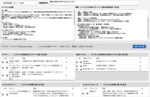
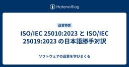

直近1週間の更新
5/10 (土)

AI for Testingについてぼんやりと考えていること(答えはまだない)  テストするアシカ
テストするアシカ
はじめに AIすごい。 すごいのですが、AIを活用したソフトウェアテストの生成事例というのは、まだそれほど多くは見かけない気がします。 なお、ここで言うソフトウェアテストとは、リリースにおける判断材料として用いたり、よりユーザに近い視点で要件との適合性を確認するためのテストを指します。(ブラックボックステストが中心になると思います) この記事を書くに至った経緯としては、Kazuさんの以下の投稿を拝見したことがきっかけでした。 生成AIによるテストの生成、➊仕様を与えたら、生成AIは直接テストケースを出す。人間はそれをレビュー・手直し・フィードバックする➋仕様を与えたら、生成AIはテスト分析・設…
35分前
QAエンジニアが身につけるスキルとマインドセット  Tsuyoshi Yumoto
Tsuyoshi Yumoto
今回はVoicyでやまげんさんのチャンネルで対談させてもらったものの文字起こしです。その中でQAエンジニアとして成長するためのスキルとマインドセットの３ステップの話をしたのですが、この話をいろいろ話したくなる場面が多くあるのでまた文字起こししました。まずは、AIに３ステップをサマリーしてもらいました。続きをみる
5時間前

Jestで非同期のテスト方法について  Zennの「Test」のフィード
Zennの「Test」のフィード
はじめにJestの基礎はざっくり理解したので、非同期テスト方法の方法ついて学びたいと思いました。Jestの基礎がある程度分かっている方が対象になります。 この記事で学べることasync/awaitを使用した非同期の場合や、コールバック関数を使用した場合のテストケースの作成方法について学べます。 動作環境OS：macOS Sequoia 15.1.1Node.js：22.6.0npm：10.8.2Jest：29.7.0 インストール方法Jestの環境構築についてはこちらをご確認ください。 基本的な使い方非同期のテストの場合はtest関数にasync...
7時間前


Jestでモックの作成方法について Zennの「Test」のフィード
はじめにJestの基礎はざっくり理解したので、公式ドキュメントに沿って次はモックについて学びたいと思いました。Jestの基礎がある程度分かっている方が対象になります。 この記事で学べることStripeのテストやAPIを実行できない場合、テスト環境の用意に時間が掛かってしまうなどでテストデータが用意できない場合にモックでテストデータを作成する方法について学べます。 動作環境OS：macOS Sequoia 15.1.1Node.js：22.6.0npm：10.8.2Jest：29.7.0 インストール方法Jestの環境構築についてはこちらをご確認ください...
9時間前
5/9 (金)

スクラムフェス新潟2025 Day1に参加してきた  天の月
天の月
www.scrumfestniigata.org スクラムフェス新潟Day1に参加してきたので会の様子と感想を書いていこうと思います。 到着 リハーサル いくおさんが現れる やまずんさんと初対面する リハーサル のりっくさんマッシャーさんと話す じょーさんと話す ささおさんと話す KuroさんほそたにさんHIROさんと話す びばさんと話す じゅんぺーさんと話す えわさんと話す オープニング スポンサーセッション おおひらさんとnacoさんのセッションを聞く keynote ばっさーさんと会ってグッズをもらう かっぱさんとお話する かっぱさんきょんさんHIROさんとお話する KAZUKINGさん…
1日前
QAとテストの勉強のとっかかりにISTQBのシラバスとNotebookLMを使うのが今の最適解かもしれない  テストする人。
テストする人。
AgileテストとかQAエンジニアが学ぶのにおすすめな本とかありますか？の最適解が NotebookLMにシラバス突っ込んで音声を聴く！になりそう（ちゃんと正しさはシラバス読んで）無料でできる最適解で最強解になりそう— リナ？ (@____rina____) 2025年5月8日 もうブログ書いている人もたくさんいると思うけど、やっぱり感動したので書いておく。 NotebookLMってなに？ https://notebooklm.google.com/ NotebookLM ってGeminiに聞いたら、最終的にこうなった↓ GoogleのNotebookLMは無料AI秘書！ 大量の資料を放り込む…
2日前
テストする人 テストする人。
“リナさんの「テストする人」もすてきな呼称ですよね。”テスターはなんと名乗る？｜Kouichi Akiyama https://t.co/6QKi89uXWmやったー褒められてたー（当時も同じこと言ってたかもしれん— リナ？ (@____rina____) 2025年5月6日 underscore42rina.hatenablog.com 私のテストするって、根本はテスト実行（Test execution）なんですよね。 でも私の Test executionは探索的テストということになっちゃうので やっぱり広義のテストする人になりそう。 そしてテストする人って言葉自体は テストを超広義に考え…
2日前
2025.05.09ビジネスNEW 識者が断言、プログラミング学習に年齢制限がないワケ(後編) Dragons Out! ユウと魔法のプログラミングノート プログラミング教育 IT教育... メディア | HQW!
2025.05.09 ビジネス NEW 識者が断言、プログラミング学習に年齢制限がないワケ(後編) Dragons Out! ユウと魔法のプログラミングノート プログラミング教育 IT教育 フィンランド教育 日本教育 NPO活動 プログラミング学習 多様性 生成AI キャリアチェンジ
2日前
5/8 (木)

GWのふりかえり 天の月
自分はまだGWは終わっていないのですが、明日からはスクラムフェス新潟に参加するということもあり、今年は14日くらい取得したGWにやっていたことをふりかえろうと思います。 読書 旅行 運動 コーディング 登壇資料作成 睡眠 読書 ここ最近読書のペースが落ちていたので、読みたかった本をばーっと色々読んでいきました。 クリティカルチェーン ストリートコーダー つくりながら学ぶ！LLM 自作入門 ダイナミックリチーミング 第2版 ―5つのパターンによる効果的なチーム編成 アジャイルデータモデリング 組織にデータ分析を広めるためのテーブル設計ガイド Good Code, Bad Code ～持続可能な開…
2日前

2025年おすすめパフォーマンステストツール比較と選び方 Zennの「QA」のフィード
最近、自分が担当しているプロジェクトでパフォーマンス問題が発生して、めちゃくちゃ焦りました（汗）。上司から「負荷テストやってなかったの？」って言われて、正直パフォーマンステストの重要性を痛感しましたね。そこで今回は、2025年に使える最強のパフォーマンステストツール5選を紹介します！これからパフォーマンステストを始める初心者の方も、すでに経験がある方も、ぜひ参考にしてください！ パフォーマンステストって何？なぜ必要なの？パフォーマンステストは、ソフトウェアやシステムの性能を評価するテスト方法です。機能テストとは違って、「動くかどうか」ではなく「高負荷時にどれだけ安定して動くか」を...
2日前
2025年おすすめパフォーマンステストツール比較と選び方 Zennの「Test」のフィード
最近、自分が担当しているプロジェクトでパフォーマンス問題が発生して、めちゃくちゃ焦りました（汗）。上司から「負荷テストやってなかったの？」って言われて、正直パフォーマンステストの重要性を痛感しましたね。そこで今回は、2025年に使える最強のパフォーマンステストツール5選を紹介します！これからパフォーマンステストを始める初心者の方も、すでに経験がある方も、ぜひ参考にしてください！ パフォーマンステストって何？なぜ必要なの？パフォーマンステストは、ソフトウェアやシステムの性能を評価するテスト方法です。機能テストとは違って、「動くかどうか」ではなく「高負荷時にどれだけ安定して動くか」を...
2日前
5/7 (水)

gomock の InOrder に挫折！？1回目と2回目の返り値を変える方法とその裏技 1 Zennの「Test」のフィード
1 Zennの「Test」のフィード
1. gomock で実行順序を制御する方法 1-1. gomock.InOrder() の基本GoMockには、メソッド呼び出し順序を厳密にテストしたいときのために InOrder(...) という関数が用意されています。具体的には、gomock.InOrder( mockObj.EXPECT().MethodA().Return(...), mockObj.EXPECT().MethodB().Return(...),)という形で宣言すると、「MethodA → MethodB の順番で呼ばれる」ことを担保できるわけです。この記述を行わない場合は、Me...
3日前

yr-learning Vol66に参加してきた 天の月
yr-camp.connpass.com こちらのイベントに参加してきたので、会の様子と感想を書いていこうと思います。 環境構築 関数型プログラミングをTSでやっていく場合の雰囲気を掴む 最初のテストケースを書く 小さな歩幅で進める 環境構築 github.com 今日からは関数型プログラミングで開発をしてみようという話をしていたので、早速環境構築から取り掛かっていきました。 リポジトリはこれまでのものを流用しようということで、ディレクトリだけ切ってworkspaceFolderを作ったりindex.tsやtsconfig.jsonを作っていきました。(Bunでほとんどは自動化されていたのでだ…
3日前

RSSTEST Zennの「Test」のフィード
寿限無 寿限無 五劫のすり切れ 海砂利水魚の 水行末、雲来末、風来末 食う寝るところに住むところ やぶらこうじのぶらこうじ パイポパイポパイポのシューリンガン シューリンガンのグーリンダイ グーリンダイのポンポコピーのポンポコナーの長久命の長助
3日前

フロントエンドのテスト、もう全部 Storybook でよくない？→よくなかったけどちょうどいい落とし所が見つかった Zennの「Test」のフィード
「このフロントエンドのテスト、全部 Storybook でいいんじゃない？」そんな考えから始まった試行錯誤の記録をご紹介します。 モチベーション私が担当しているプロジェクトでは Jest + Storybook + MSW を使用していて、テスト方法としては次のような構成を採用していました。Storybook で Arrange と Act までを定義（UI 状態とユーザー操作を Story として表現）Jest でその Story をレンダリングし、play 関数を実行、結果をアサーションimport { composeStories } from '@storybo...
4日前

データサイエンティストのための確率的挙動を含むソフトウェアテスト Zennの「Test」のフィード
はじめに最近 Zenn に記事を書くことをライフワークにしたいと思っている redtea です。本業として所属する組織が変わりましたので、当面の間は個人で Zenn 記事を書いていく予定です。機械学習や数理最適化の実務を担当していると、そのソフトウェアに含まれる確率的挙動によりデバッグやテストに苦労することがあるかもしれません。多くの場合でシード値[1]を固定することでデバッグやテストができますが、それだけでは不十分なこともあります。本記事では、確率的挙動を含むソフトウェア、特に機械学習・数理最適化分野のシステムに対するテスト戦略に焦点を当て、私なりの考え方と具体的な実践方法を...
4日前
2025.05.07ビジネスNEW 【連載】QAの変遷を語る: NARAコンサルティング・奈良隆正氏「日本のソフトウェアテストの幕開けとなった大阪万博の記憶」 NARAコンサルティング 代表 奈... メディア | HQW!
2025.05.07 ビジネス NEW 【連載】QAの変遷を語る: NARAコンサルティング・奈良隆正氏「日本のソフトウェアテストの幕開けとなった大阪万博の記憶」 NARAコンサルティング 代表 奈良隆正 QAの変遷を語る ソフトウェアテスト 品質保証 大阪万博 コンピュータの歴史 第三者検証 ソフトウェアプロセス改善 プロジェクトマネジメント ソフトウェア工場 技術伝承
4日前
5/6 (火)

大人のソフトウェアテスト雑談会 #268【休日】に参加してきた
天の月
大人のソフトウェアテスト雑談会 #268【休日】 - connpass 今週もテストの街葛飾に行ってきたので、会の様子と感想を書いていこうと思います。 スクラムフェス新潟 イラスト 生成AIが出てからのプロポーザル変化 テスト観点 全体を通した感想 スクラムフェス新潟 いよいよ今週に迫ってきたスクラムフェス新潟の話をしていきました。 おおひらさんが急遽オープニング登壇をすることになったためおおひらさん自身の登壇もある中で準備が大変だという話をしたり、今年のスクラムフェス新潟にはのりっくさんも来るという話をしたり、発表準備をお互いにどのようにやってきているのか？といった話をしたりしていました。 …
4日前

ISO/IEC 25010:2023 と ISO/IEC 25019:2023 の日本語勝手対訳  ソフトウェアの品質を学びまくる
ソフトウェアの品質を学びまくる
ISO/IEC 25010 は、ソフトウェアの品質モデルに関する規格です。SQuARE（Systems and software Quality Requirements and Evaluation）とも呼ばれています。 旧版の ISO/IEC 25010:2011 は、JIS X 25010:2013 として日本語化されているのですが、最新版である ISO/IEC 25010:2023 Product quality model ISO/IEC 25019:2023 Quality-in-use model の2つはJIS化されておらず、定訳がありません。そこで、「こんな感じかなー」という…
4日前

Flutterのアプリにゴールデンテストを導入 Zennの「Test」のフィード
はじめにアプリを作ろうと思ったんですが、いろいろ始める前に、なにかするとすぐ画面が崩れるので、知らないところでそうならないよう、画面の差分があったときにはちゃんと来づけるようにしたい…と思い、ゴールデンテストを導入することにしました。…というわけで設定作業を始めたのですが…ちゃんとアプリの画面が取れるようになるまでに苦労があったので、そこをシェアしようかな、と思った次第です。 結論alchemistのサンプルには、ListTileのテストが書かれていまして…そのままアプリのページのMyApp（flutter create直後にできるヤツ）を置き換えても、ものすごい大量の例...
4日前
生成AIによって変わる世界線 つーつー
QAエンジニアのつーつーです！みなさん、生成AIの活用進んでいますか？日々、新しいサービスが出てきており、キャッチアップをしているのですが、圧倒されています😂便利だな、すごいな！と思う反面、このペースで色々とサービス化が進むと、我々の仕事無くなるんじゃないの😱リスキリングして、pivotしないとまずいのでは🧐と思うことが多いと思います。続きをみる
4日前
Pythonによるデータプロファイリング Zennの「品質」のフィード
データ品質の概念実装に入る前にデータ品質の概念から整理していきたいと思います。参考にしたのは以下の記事です。https://note.com/zono_data/n/n620b48d2b49f 10ステッププロセスデータ品質の改善は、一度行えば終わりというものではなく、継続的に取り組むべき活動です。データ品質実践ガイドには、以下の10のステップに分解して説明されています。 データ品質評価の14タスク10ステッププロセスのStep3「データ品質の評価」では、データの品質を一面的な見方ではなく、多角的に捉えることが重要です。ガイドブックでは、そのための評価軸として以...
5日前
5/5 (月)

スクラム祭りの打ち合わせ(36回目)をしてきた 天の月
aki-m.hatenadiary.com こちらの打ち合わせをしてきたので、会の様子と感想を書いていこうと思います。 雑談 Confengineのupdate キャッシュ・フローのupdate 公式Xでの告知 雑談 秋田→仙台→新潟という独特？なルートで旅をしている中で、なぜ仙台に寄ろうと思ったのか？という話から仙台で楽天とオイシックス新潟の1戦を見たいと思ったのとバスケの試合を見に行きたかったのが理由だという話をしていました。 選手一覧を見ると知っている選手が多数いて驚きでしたが、これでもなかなか勝てないというのはプロ野球のレベルの高さを思いしりました。 Confengineのupdate…
5日前
ビジネスを守る武器：E2Eテストとは何か？ Zennの「QA」のフィード
E2Eテストという言葉は聞いたことがあるけれど、実際の現場ではまだ活用できていない、そんな方も多いのではないでしょうか。本記事では、E2Eテストの基本と、その重要性を非エンジニアの方にもわかりやすく解説します。特に、バグによる見えない損失がどれほど大きいか、実例とともにご紹介しながら、小さく始めて大きな効果を出すE2E導入の現実的なステップまで掘り下げていきます。 📘 この記事を読んで分かることE2Eテストとは何か？ を非エンジニアでも理解できる形で解説売上や信頼を守る ために、なぜE2Eが“コスト”ではなく“投資”なのかバグによって起きる損失の具体例と、最小限の導入...
5日前

Jestの基本をざっくりと理解する
Zennの「Test」のフィード
はじめにPHPUnitの学習はしましたがJestも使う機会があったので、同じタイミングで学習しました。その学習の過程をまとめたのが本記事です。 Jestとは？Jestは、Facebook（現Meta）が開発した、JavaScript・TypeScript向けのテスティングフレームワークです。主に フロントエンドアプリケーション（Reactなど） の単体テストやスナップショットテストに使われます。 この記事で学べることJestの基本的な書き方や、ユニットテストの方法が学べます。実際のテストの具体例を見てテストとはどういうものなのか？をざっくりと把握できます。 動作...
5日前
ゆもつよメソッドを使った実践例の記事をNotebookLMで音声配信に変換してみた Tsuyoshi Yumoto
最近はVoicyのQAゼミチャンネルの配信を始めたよ！ってことは、別の記事で書きましたが、QAゼミ内のSlackにてこのnoteの内容をNotebookLMにてAudio Overviewっていうので音声配信のようにしてくれるってことをまこっちゃんに教えてもらいました。なんかすごい機能だと思い、自分でも試してみました。元ネタはfreeeのブログにて公開した、ゆもつよメソッドをfreeeで使う時にはこんな感じに応用して使ってますって内容の記事です。続きをみる
6日前
5/4 (日)

PHPUnitのモックとスタブの使い方 Zennの「Test」のフィード
はじめにPHPUnitのモックとスタブ学習したので、備忘録としてまとめておく記事です。PHPUnitのインストールや詳細な使い方については、こちらの記事を参考にしていただければと思います。 この記事で学べること他のコンポーネントに依存するメソッドやクラスをテストする際、実際のデータや外部環境を使わずに、モックやスタブを使ってテスト用のデータや挙動を再現する方法を学べます。 動作環境OS：macOS Sequoia 15.1.1PHP：8.4.4PHPUnit：12.1.4Composer：2.5.1 テストダブルとは？偽物のオブジェクトを使ってテストす...
6日前

なぜイノベーションは起こらないのかを読んだ 天の月
www.maruzen-publishing.co.jp 献本いただいたこちらの本を読んだので、印象に残った部分や感想を書いていこうと思います。(読書感想ブログを書くときは自分はいつもこのスタンスですが)ぜひ実際に手にとって読んでほしいので、書籍の中身にはあまり触れないように意図的にしていますが、記載していない部分も含めて示唆に富む箇所が多く、素晴らしい本でした。 本書を特におすすめしたい人 本書で特に印象に残ったトピック 3タイプのイノベーションとリーダーシップ 書いてしまいがちなよくないビジネスモデルキャンバス 読んでいて個人的に好感がもてたポイント すっきりした翻訳 おまけ(誤字発見) …
6日前

PHPUnitのDataProviderの使い方 Zennの「Test」のフィード
はじめにPHPUnitを学習する機会があったので、備忘録としてまとめておく記事です。PHPUnitのインストールや詳細な使い方については、こちらの記事を参考にしていただければと思います。 この記事で学べることデータプロバイダーを使用して、1つのメソッドを複数のデータセットでテストする方法がわかります。 動作環境OS：macOS Sequoia 15.1.1PHP：8.4.4PHPUnit：12.1.4Composer：2.5.1 DataProvidersを使用しない場合引数の値を足し算した結果を返すクラスをテストします。src/Calculato...
6日前

PHPUnitの基本をざっくり理解する Zennの「Test」のフィード
はじめにこれまでテストコードに触れたことがなかったのですが、今回実務で扱う機会があったため、初めて勉強してみる事にしました。その学習の過程をまとめたのが本記事です。 PHPUnitとは？PHPUnitは、PHPで単体テスト（ユニットテスト）を実行するためのフレームワークです。ユニットテストは、個々の関数やメソッドが意図した通りに動作するかを確認するためのテストです。PHPUnitを使うことで、バグの発見やコードのリファクタリングをより安全に行うことができます。 この記事で学べることPHPUnitの基本的な書き方や、ユニットテストの方法が学べます。実際のテストの具体例を...
6日前